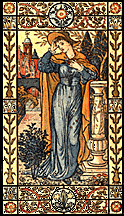

About J.R. Burrows & Company and Burrows Studio
 Burrows
Studio encompasses the collection of Arts & Crafts Movement
designs offered by J.R. Burrows & Company. Styled under the
direction of John Burrows, the designs are representative of the Aesthetic Movement and the first generation of the Anglo-American Arts & Crafts Movement from the 1880s and 90s.
Burrows
Studio encompasses the collection of Arts & Crafts Movement
designs offered by J.R. Burrows & Company. Styled under the
direction of John Burrows, the designs are representative of the Aesthetic Movement and the first generation of the Anglo-American Arts & Crafts Movement from the 1880s and 90s.
In 1880s New England the Colonial Revival was fused with Arts & Crafts sensitivity and known as the Old Colony Style. Our patterns have been used in some of the most famous Shingle Style, Queen Anne Revival and Colonial Revival homes of the late 19th century. Burrows Studio also offers designs in the post-1900 American Arts & Crafts style and is introducing Art Deco designs from the 1920s.
Our pattern designs, drawn from nature and following the principals of moral design of the Arts & Crafts Movement, represent the finest aspects of simplicity and refinement in line and coloring. See our Design List for the full
offering, and Design Quotations for further
ideas from the Victorian era.
Among the wallpaper designers whose work is represented in the Burrows Studio collection is Candace Wheeler, whose firm, Associated Artists, was a leader in pattern design in the 1880s and 90s and Jennie B. Jones, an art educator and designer from the early 20th century. New additions forthcoming to the collection are from the studio of German-American designers Mitschke and Huizeng (c. 1910s - 1930s) and current designs in the Arts & Crafts tradition by John Burrows.
J.R. Burrows & Company, founded in 1985, is located in Rockland, Massachusetts. In addition to the Burrows Studio collection, John Burrows and his associates import and market Scottish lace curtains in a variety of Victorian styles. They also are American representatives for the Stourvale Mill Collection, the most extensive group of English carpets available in historic styles. Several hundred available patterns date from the late 18th century through the early 20th centuries. Burrows & Co. has supplied carpets for historic properties across North America from Maine to Florida and to Alaska and Hawaii. Please look at our full list of
projects.
John Burrows, Proprietor
Email John Burrows
Go to J.R. Burrows & Company Main
Page
Doing Business With Us
Illustration by Walter Crane from Pan Pipes, A Book of Old
Songs, London: George Routledge and Sons, 1883.
 J.R.
Burrows & Company
J.R.
Burrows & Company
P.O. Box 522
Rockland, Massachusetts 02370
E-mail:
merchant@burrows.com
Phone: (800) 347-1795; Phone: (781) 982-1812 Fax: (781) 982-1636